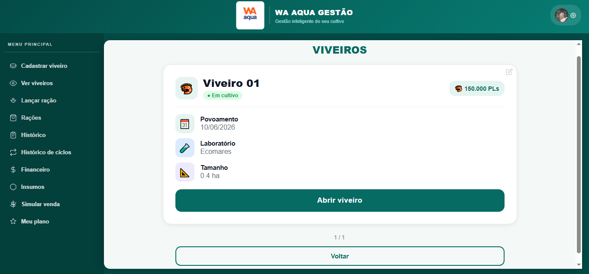
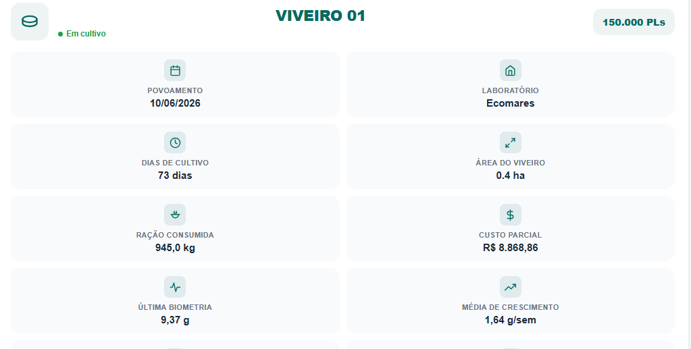
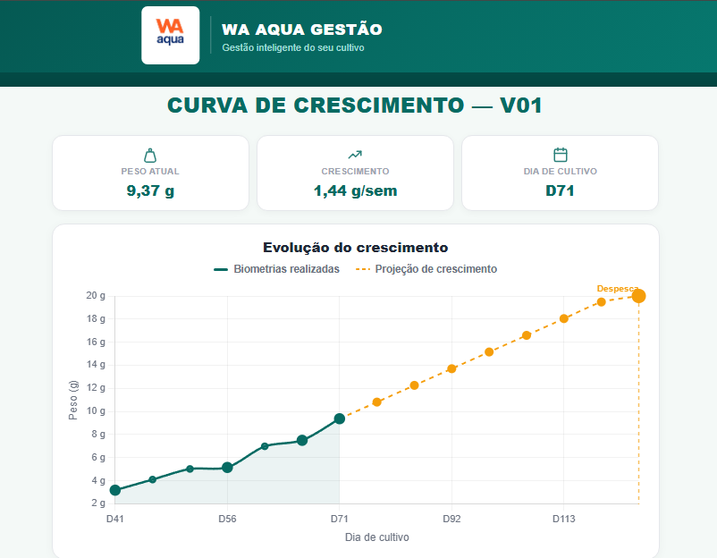
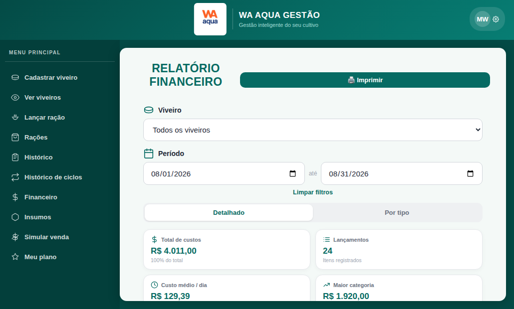
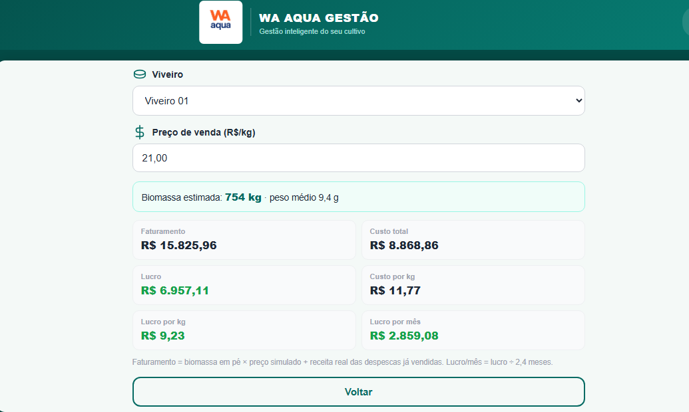
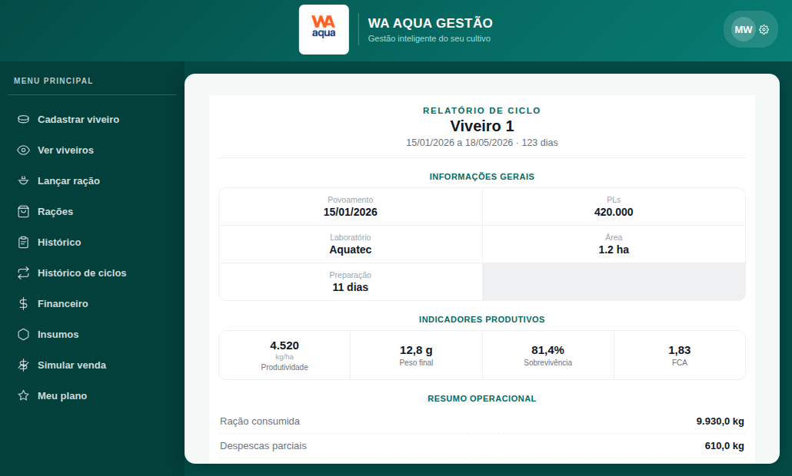

Controle de Viveiros
Cadastre e acompanhe todos os seus viveiros em tempo real.

Acompanhe seus viveiros, ração, biometrias, custos e resultados em um só lugar. Do povoamento à despesca, tenha dados para decidir melhor e aumentar seus lucros.

Cadastre e acompanhe todos os seus viveiros em tempo real.

Registre o consumo, acompanhe biometrias e veja a evolução do cultivo.
Visualize a evolução do peso e planeje os próximos passos do ciclo.

Acompanhe custos, faturamento, lucro e indicadores por viveiro.

Teste diferentes preços de venda e veja o resultado antes da despesca.

Compare ciclos anteriores e encontre oportunidades de melhoria.

Veja algumas das principais telas do sistema.
Visualize rapidamente peso, idade do cultivo, ração, custos e crescimento.
Acompanhe as biometrias realizadas e a projeção de crescimento.
Compare preços e veja faturamento, custo, lucro e custo por quilo.
Navegação simples e informações centralizadas para o dia a dia da fazenda.
Simule diferentes preços e acompanhe biomassa, faturamento, custos e lucro para tomar decisões com mais segurança.
Experimentar agora →O WA Aqua Gestão foi pensado para simplificar sua rotina e centralizar os dados que realmente importam.
Mais controle, menos planilhas e decisões melhores todos os dias.